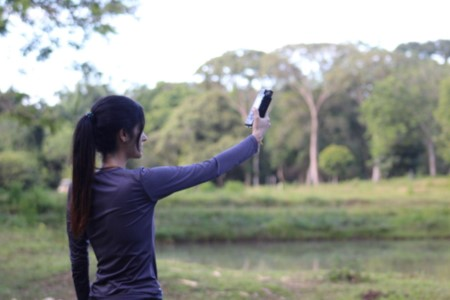

Banco De Sonidos
El banco de sonidos ofrece a las personas la oportunidad de escuchar de primera mano las vocalizaciones características de aves, mamíferos, insectos y anfibios sin necesidad de estar físicamente en sus hábitats. Al proporcionar una experiencia auditiva directa y accesible estos audios facilitan una comprensión más profunda y tangible de la riqueza y diversidad de la vida en distintos ecosistemas.
Museo de Historia Natural Unillanos
Visítanos
Sede Barcelona: Km. 12 Vía Puerto López, próximo a los laboratorios de electrónica y biología molecular.
Links de interés
Contáctanos
museo@unillanos.edu.co